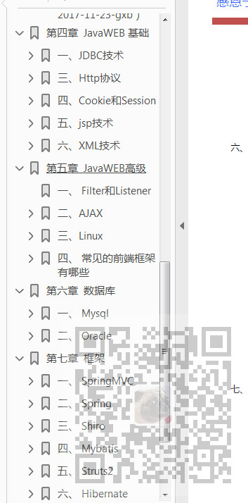

原文出处:本文由博客园博主霸道流氓提供。
原文连接:https://www.cnblogs.com/badaoliumangqizhi/p/11839139.html
原文连接:https://www.cnblogs.com/badaoliumangqizhi/p/11839139.html
场景
JavaSE基础
面向对象特征以及理解
访问权限修饰符区别
理解clone对象
JavaSE语法
java有没有goto语句
&和&&的区别
如何跳出当前的多重嵌套循环？
是否可以继承String？
重载与重写的区别？
char型变量中能不能存储一个中文汉字？
抽象类与接口的异同
抽象方法是否可以是静态的？
...
Java中的多态
Java的异常处理
JavaSE常用API
Java的数据类型
Java的IO
Java的集合
Java的多线程和并发库
Java内部类
Java的反射
Java的动态代理
Java的设计模式和回收机制
Java的类加载器
JVM基础知识
Java8的新特性
...

实现
获取方式
关注公众号：
霸道的程序猿
回复：
黑马程序员面试宝典